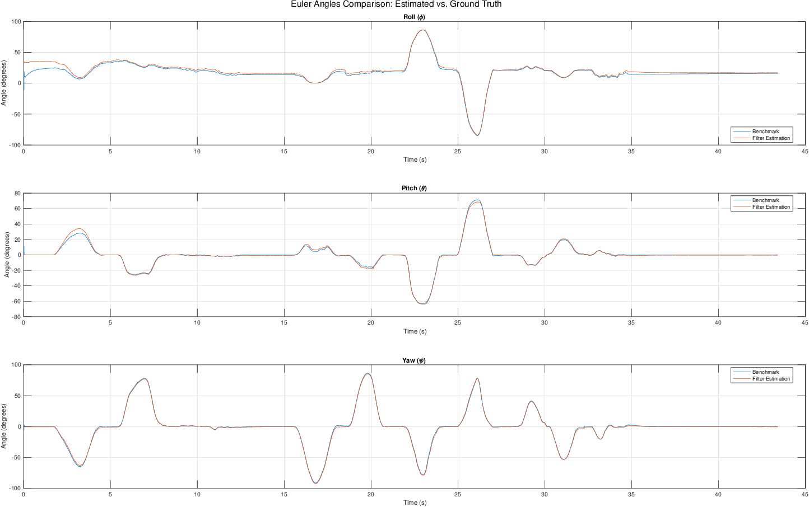

Project information
- Project name : Orientation Estimation Using Smartphone Sensors
- Course : SSY345 – Sensor Fusion and Nonlinear Filtering (Chalmers University) View course details
- Authors : Mohammad Albarham, Yibo Zhou
- Year : 2025
- Report : Project Report (PDF)
Project overview
This project implements an Extended Kalman Filter (EKF) that estimates the orientation of a smartphone in real time by fusing its gyroscope, accelerometer, and magnetometer measurements. It was developed as part of the SSY345 – Sensor Fusion and Nonlinear Filtering course at Chalmers University of Technology. Sensor data was streamed from an Android phone (Samsung Galaxy S22 Ultra) over Wi-Fi with the Sensor Fusion app, and the filter output was compared against the phone's built-in orientation estimate from the Google API.
Approach
- State: Orientation represented as a unit quaternion, avoiding the gimbal lock and discontinuities of Euler angles.
- Time update: Gyroscope angular rates drive the quaternion dynamics as an input, keeping the state small.
- Accelerometer update: Uses the gravity direction to correct roll and pitch.
- Magnetometer update: Uses the Earth's magnetic field to correct yaw (heading).
- Outlier rejection: Skips accelerometer updates under strong body acceleration, and magnetometer updates under magnetic disturbance, using an adaptive expected field magnitude.
Sensor characterisation
The phone was first left still for 60 seconds to record each sensor. Means, covariances, time series, and histograms were used to estimate biases and noise levels, which set the process and measurement noise covariances of the filter and the reference gravity and magnetic field vectors.
Results

Figure 1: EKF roll, pitch, and yaw against the Google benchmark, with magnetic disturbance and outlier rejection enabled.
- Gyroscope only: tracks fast rotations but drifts over time.
- Adding the accelerometer: roll and pitch converge to the true values, but yaw stays unobservable.
- Adding the magnetometer: yaw aligns with the benchmark even from an unknown initial heading.
- With outlier rejection, the filter stays aligned with the benchmark during shaking and near magnetic disturbances.
- Without the gyroscope, accelerometer and magnetometer alone cannot follow fast or small orientation changes.
Live demo
Our EKF estimate (left) next to the Google estimate (right). The flags show when magnetometer or accelerometer updates are rejected.
Technologies
- MATLAB
- Extended Kalman Filter
- Quaternions
- Android Sensor Fusion app (IMU streaming)